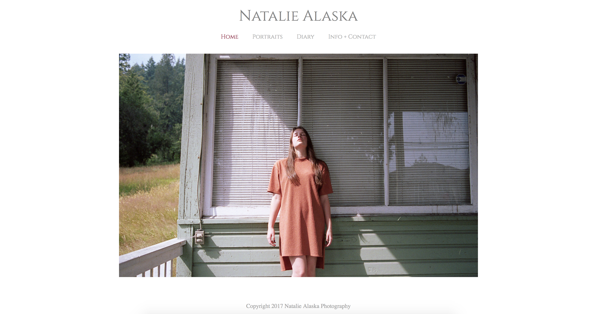
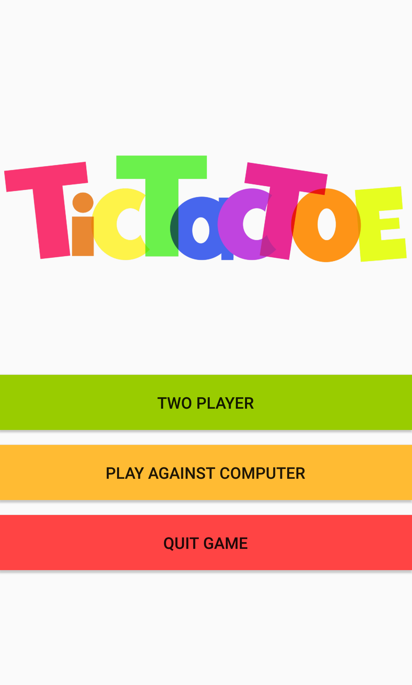
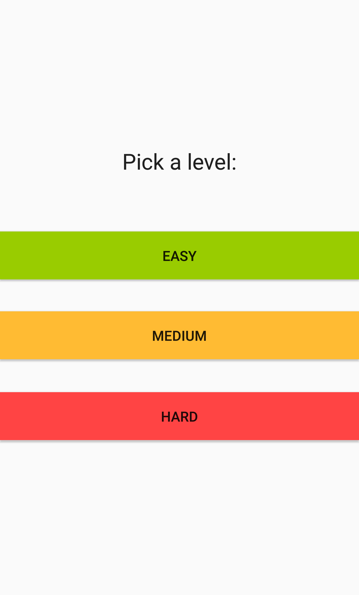
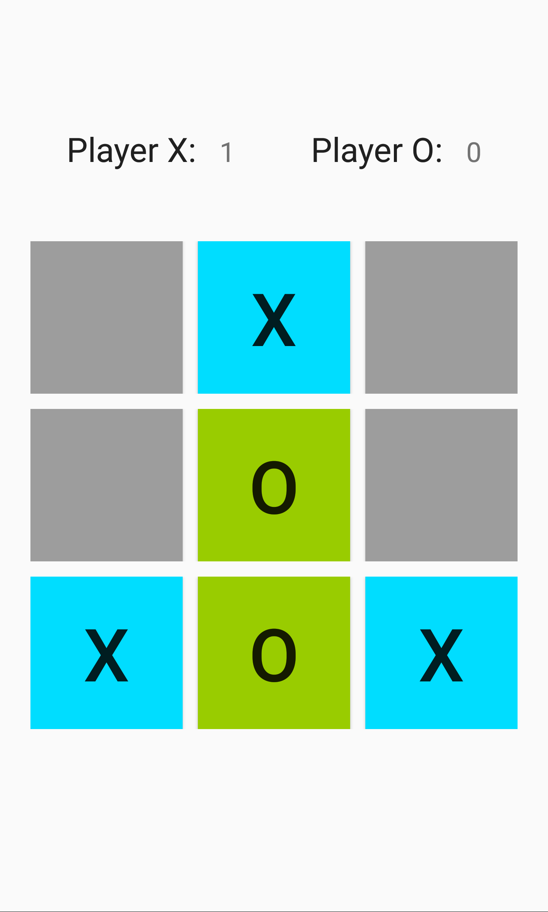
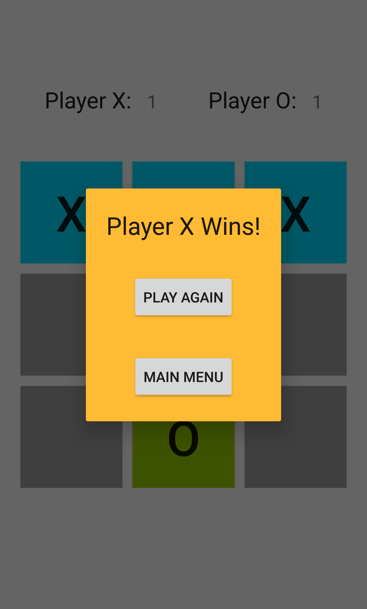
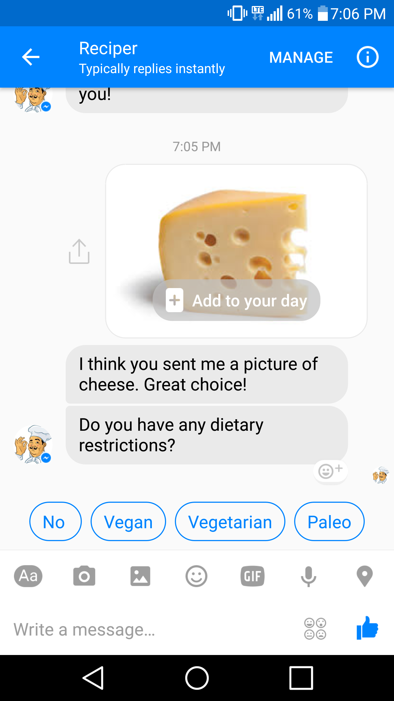
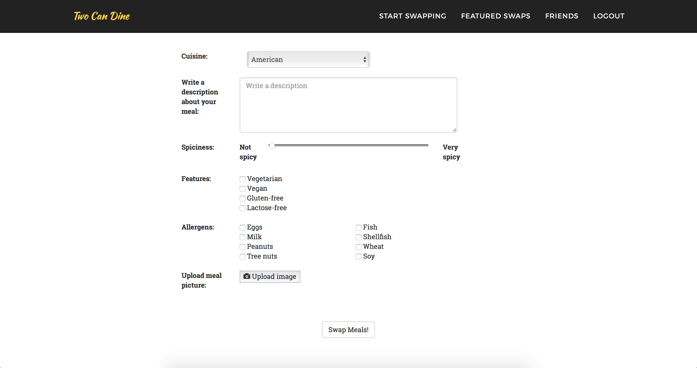
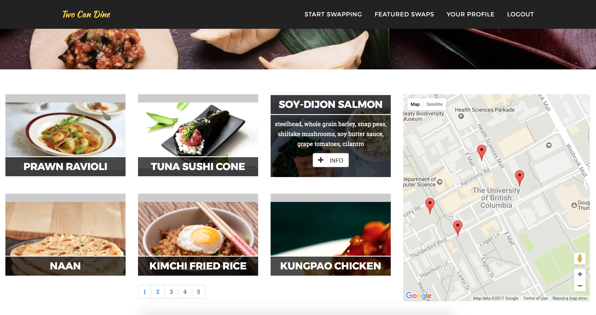
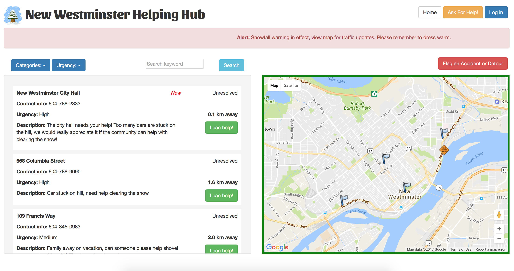

PROJECTS
Photography Portfolio Website
As a freelance fashion photographer, I've always wanted to create a website to showcase my photo portfolio. Before studying compsci, I used website services that provided templates ... but what's the fun in that?! After learning HTML/CSS and JavaScript, I decided I would make my own website, from scratch!
For this project, I used Masonry.js to create the Pinterest-style layout of images. I also used Featherlight.js to create the lightbox effect when you click on the photos.
Here is the link to the website: www.NatalieAlaska.com


{kind=link}
Tic Tac Toe
After taking a course on design patterns and Java, I decided to practise what I learned by writing a Tic Tac Toe game. The challenge was creating the computer player; I used the minimax algorithm to generate and evaluate all possible moves to find the best move for the computer opponent to play. I've also implemented 3 levels of difficulty, which is done by changing the depth of the tree of possible moves.
Initially the game is played on the IDE console. Recently, I decided to turn it into an Android app.
Available on Google Play:




{kind=link}
{kind=link}
{kind=link}
{kind=link}
MSFTHacks 2017 - ReciperBot
I had the great opportunity to participate in the MSFTHacks by Microsoft. In a team of 4, we created a messenger bot that scans the image of a grocery item (uploaded by the user) and recommends cooking recipes based on the uploaded image.
The entire project was written using Node.js. We used the Microsoft Bot Framework and Microsoft Azure to create ReciperBot and the conversation stream between the bot and user. For the image scanning, we used the Microsoft Cognitive Services Computer Vision API. We experimented with several recipe recommender API, such as Spoonacular.
After the user uploads a photo, ReciperBot will ask the user for their dietary restrictions and cuisine preference. By gathering information from user input, ReciperBot recommends a few recipes.
My task in this project was implementing the conversation and prompts by ReciperBot. I also wrote the code that uses Computer Vision API, and parses the JSON object from the API response to determine what grocery item was detected in the uploaded image.

{kind=link}
AxiomZen Hackathon - Two Can Dine WebApp
The Two Can Dine WebApp is a project I created in a team of 4 for the AxiomZen Hackathon. The theme for this hackathon is "diversity", so we decided to create a website that promotes cultural diversity through food. The Two Can Dine WebApp is designed for people to connect with each other and swap homemade meals. For this project, we used HTML/CSS, JavaScript, and the Bootstrap Framework.

My task for this project was creating the "Meal Form", where users can fill out details about the meal they cooked. I was also created the page for users to browse meals that other users have posted.


{kind=link}
{kind=link}
Amazon Open Data Hackathon - New Westminster Helping Hub
This project is from my first ever Hackathon. The prompt for this hackathon was to create a project using open data provided by the City of New Westminster. My partner and I wanted to solve a problem that the city had experienced not too long ago: traffic congestion during severe weather conditions.
The Community Helping Hub allows residents of the city to exchange help during severe weather conditions (such as windstorms). Users of the Helping Hub can create postings when they need help, and respond to postings when they are available to help others. The Helping Hub also features a map for users to flag road conditions and an alert bar for the city to keep the residents up-to-date.
Best of all, We won third place in the hackathon! :)

{kind=link}